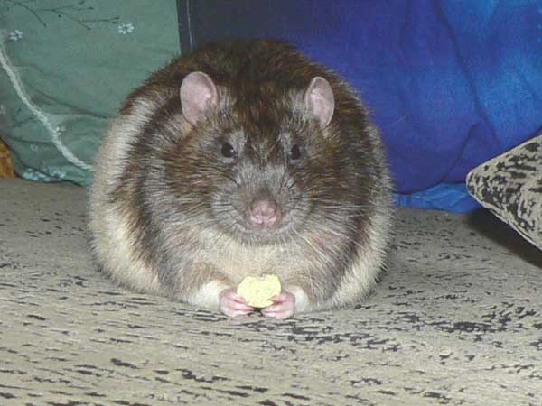
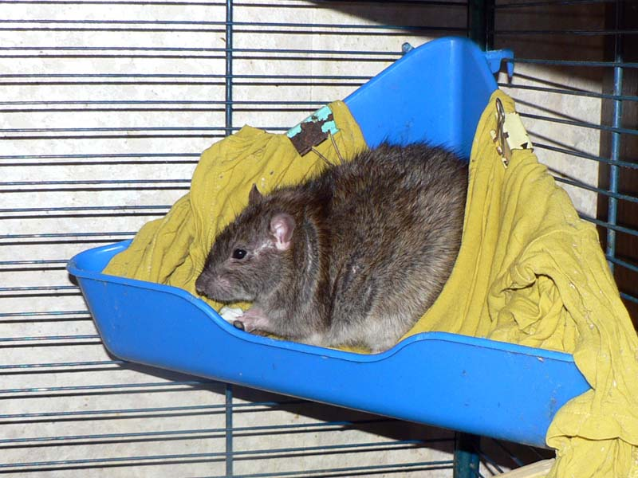
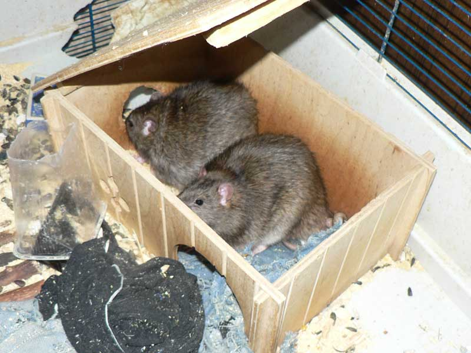
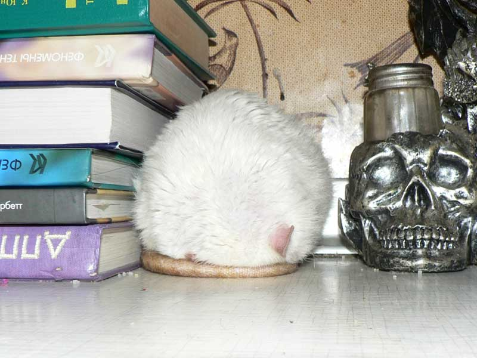
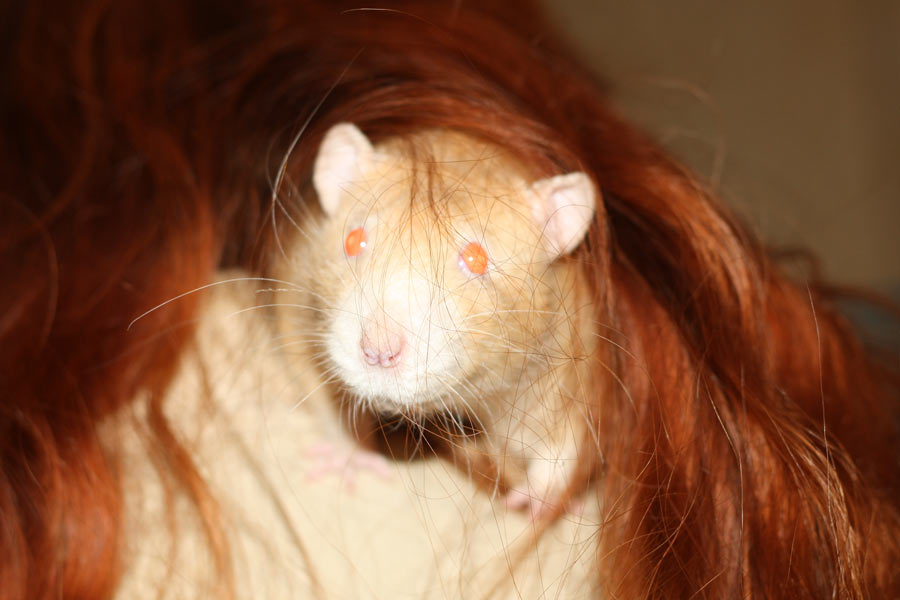

Warrax
Крысиные имена
|
Мы назвали крысу Совестью, потому что от неё были сплошные угрызения… ©
|
Вопрос «как назвать крыс?» регулярно возникает у каждого крысовода: живут крысы, увы, недолго, и как следствие — каждый год надо придумывать новое имя, а то и несколько. Задача усложняется, когда зверь породистый и приходится изобретать имя на определённую букву (распространённая практика питомников: легко определить, к какому помёту кто принадлежит).
Не претендуя на «только так и надо» (тем более, что и у меня нет точной методологии), расскажу, как мы называли своих крысов и почему. Может, кому-то поможет в выборе имён для своих хвостатых, по ассоциации.


Один (ноябрь 2002 — 23 февраля 2005, Blue Berkshire Standard).
Первый крыс, появился уже с именем. Приехала подруга поступать в Москву, привезла с собой. Фамилии не получил — откуда у Одина фамилия?

Стасик Полоскин (декабрь 2003 — 15 апреля 2005, Blue Agouti Hooded Standart)
Был взят у [censored], которые держали его всю жизнь в переноске и кормили редко и чем попало. Забирал через посредника, передали фразу «вы его там напоите, а то мы воду сегодня не ставили, всё равно отдавать». Прожил у нас всего недели три — почки уже не работали…
Почему «Стасик» — неизвестно. Именно так выглядел. А Полоскин — потому что на спине была плащевая полоса.

Мулька Шилохвост (март 2004 — 30 октября 2005, Silver Black Berkshire Standard)
Имя получил от хозяйки — студентка завела в общежитии крыса, а затем мать категорически запретила его забрать домой. А Шилохвост — потому, что у него явно было шило в заднице.

Джет Сильвер (16 февраля 2004 — 13 января 2007, Silver Black Self Standard)
Имя полностью от хозяйки. Почему Джет — не знаю, а Сильвер — из-за окраса: редкие белые шерстинки на чёрном фоне дают серебристый оттенок, очень красиво.


Тимофей Коломенский (март 2005 — 29 августа 2007, Blue Berkshire Standard)
Тимофей — опять же, потому, что так выглядел. Серьёзный, себе на уме, но с философским складом этого самого ума. Забирали с метро Коломенское — отсюда фамилия.

Джонни Сильвер (22 мая 2006 — 7 января 2008, Silver Black Self Standard)
Родственник Джета Сильвера. Всё аналогично.


Ерофей Капунович Кондратьев (14 октября 2005 — 13 января 2008, Black Huskey Standard)
Енисей Капунович Кондратьев (14 октября 2005 — 2 июня 2008, Blue Huskey Standard)
Родные братья. Отчество — от папы Капуна, фамилию хозяйка предложила свою (если склероз не подводит), а вот имена мы замучились выбирать: надо было на «Е», но подавляющее большинство мужских имён на эту букву имеют еврейское происхождение.


Маркус Раттус Цезарь Паллиатус (17 марта 2006 — 5 апреля 2008, Agouti Hooded Standard)
Цезарь (ну да, я в курсе, что правильно «кесарь») был с младенчества волевой, сильный и проассоциировался с древним римлянином. У них имён как таковых было мало, Маркуса и Цезаря выбрали просто так, Раттус — понятно откуда, а Palliatus — это «плащеносец», прозвище по маркировке.


Партизан (февраль 2007 — 2 июня 2008, Shampagne Hooded Standard)
Был найден на улице Партизанской. Принёс домой новенького Эрика, пошёл за пивом — а там на автобусной остановке кто-то поставил переноску с крысиком. С едой, водой — явно не забыл, а оставил специально. Ну а про фамилию у Партизана мы спрашивали, но ничего не добились, — молчал.

Сатир Верещагин (1 мая 2008 — 13 апреля 2009, Black Irish Rex)
Первый рекс — кудлатый, поэтому Сатир. А фамилия — от звуков, которые он интенсивно издавал в начале знакомства с нами и другими крысами.

Сэр Харитон Постал (4 апреля 2008 — 12 июня 2009, Blue Berkshire Standard)
Тут сложно, какие-то далёкие ассоциации. Во-первых, он был тоже философ на вид, эдакий отстранённый и с чувством достоинства, поэтому проассоциировался с англичанином, но всё равно был наш, так что имя вылезло русское. А Постал — потому что требовалась околоанглийская фамилия, а я в то время с удовольствием проходил игру Postal 2.


Гаврик Астартович Малышок (декабрь 2007 — 25 июня 2009, выцветший Huskey Standard)
Спасёныш, хотели выбросить на улицу. Имя было от [censored] хозяев, а забрали и взяли на передержку, пока он не попал к нам, Astarta и malishok с форума rat.ru.


Эрик Янссон Рыжая Шкура из Домика Голубой Крысы (12 апреля 2007 — 20 июля 2009, Amber Irish Standard)
Первый наш породистый клубный крыс. Эриком он был назвал от клуба, Янссон — это отчество, а Рыжая Шкура — прозвище, типа как у викинга.

Нагваль Никодим из Домика Голубой Крысы (18 января 2008 — 16 апреля 2010, Black недоSelf Standard)
Надо было назвать на «Н», и я запросил помощь зала, в смысле — ЖЖ. Предложили несколько интересных идей, и состыковалось такое вот имя с двойным «Н».


дон Румата из Крыскиного Теремка (24 января 2008 — 12 июля 2010, Agouti Hooded Standard)
дон Рэба из Крыскиного Теремка (24 января 2008 — 8 мая 2011, Agouti Berkshire Standard)
Братья, надо было назвать на «Р». Ну а поскольку породистые, то что-то вспомнились «благородные доны», и очень удачно совпали «по букве».

Виконт Маггот-Сосискин (весна-лето 2008 — 24 сентября 2010, Shampagn Standard)
Найдёныш на улице, весь искусанный дикими крысами. Решили дать в качестве компенсации «благородный титул», но на герцога или графа он явно не тянул. Подобрала и выходила его maggot с форума rat.ru, а Сосискин — потому что в попоне после операции он выглядел как сосиска с ножками, ушами и хвостом. В общем-то, Сосискиным его и звали всю жизнь — это к вопросу длинных пафосных имён.


Жоффруа Тори из Домика Голубой Крысы (17 мая 2009 — 14 декабря 2010, Shampagn Self Dumbo)
Имя дано заводчицей, в честь французского гравёра и книгоиздателя XV века.
Иннокентий Пасюкович Тихвинский (сентябрь 2009 — 12 сентября 2011, Agouti Self Standard, пасюк)
Дикарь, найден на улице, копошился у какого-то бомжа за пазухой. Вначале грыз клетку, откуда и получил имя: помните попугая Кешу со «Свободу мне, свободу!»? Пасюкович — понятно, а обнаружен он был на Тихвинской улице.


Циклон Б из Эдема (1 мая 2010 — 12 июля 2012, Mink Self Rex Standart)
Породистый, и надо было придумать имя на «Ц». Был ещё вариант «Цепеллин», но испугались, что вырастет размером с дирижабль.

Сентябрь Первый-Крылечкин (26 июля 2009 — 13 августа 2012, Black self rex)
Был подобран с братьями на крыльце школы 1 сентября в возрасте около двух месяцев, в коробке. Почему именно 26 июля — не помню; кажется, декларативно назначено тем, кто нашёл и подобрал.


Снежок Фуркацин (прибл. лето 2011 — 27/11/2012, Albino Standard)
Из вивария, после опытов. Альбинос, поэтому Снежок — без изысков. Фамилию пытались придумать медицинскую, но как-то не шло. Сначала думали, что алембик — но это уже алхимическое, а не медицинское. А потом рассказали, что забрали из лаборатории несколько крысов, и хвосты им метили, чтобы не путать между собой, фукарцином. Вот и получил такую фамилию — с опечаткой, правда, но ещё раз переименовывать не стали.
Терабайт из Крыскиного Теремка (8 мая 2010 — 9 февраля 2013, Agouti Irish Standard)
Сложный вопрос, почему, но имя возникло само. Мол, терабайт выглядит именно так! Фамилия к такому имени не положена — тоже сразу как-то понятно стало. Мистика :-)




Дюк Нюкем из Раттус Перфектус (11 июля 2011, Agouti Self Standard, на 3/4 пасюк)
Джон Ди из Раттус Перфектус (11 июля 2011, Agouti Self Standard, на 3/4 пасюк)
Братья, назвать надо было на букву «Д». Дюк Нюкем — известный герой, крыс вырос солидным, сильным и смелым. Джон Ди — известный оккультист, вырос скрытным, ныкательным.


Октябрь Семнадцатого (прибл. лето 2011 — 11 февраля 2014, Black self rex)
Появился у нас вскоре после ухода Сентября, и на вид — очень похож. Поэтому назвали Октябрём, поскольку следует за Сентябрём. Ну а что ассоциируется с Октябрём? Правильно, 1917-й год.


Митрофан Копчёный (прибл. начало 2012 — 9 марта 2014, Himalayan rex)
Был оставлен в ветеринарной клинике, там и получил имя Мотя. Встала задача — какое дать полное имя? Не звать же «тётя Мотя». Матвей — это Митя. Решили, что ближе всего из мужских имён к Моте — это Митрофан. Ну а фамилия — от окраса, подкопчённый нос.


Аник Зефайтер (01 декабря 2012 — 17 октября 2014, Shampagn Self Standard)
Имя получил от хозяйки. Оказался боевым крысом, не давал себя построить старшему, поэтому решили назвать как-то воинственно. Но вот «Аник Воин» как-то неблагозвучно, да и «аника-воин» вспоминается. Поэтому решили: пусть будет The Fighter, ну и фамилии слитно пишутся.


Fox Hole Ozzy (27 сентября 2013, Amber Berkshire Standard Velveteen)
Породистый, из питомника Fox Hole. А имя получил даже не напрямую в честь Оззи Осборна, а как-то косвенно: разговаривали о музыке с одной замечательной девушкой, и в процессе я новенького показал, и получилось что-то типа "Оззи, он... о, какой классный!". Вот и :-)


дон Хенаро Флорес Кастанедыч Сибирский (13 августа 2014, Agouti Self Standard)
Надо было срочно дать имя на "Х". Это не так уж легко, учитывая обширный список имёт в питомнике, которые уже были на эту букву. Флорес — это фамилия Хенаро, Кастанедыч — это чтобы не забыть, откуда имя, ну а Сибирский — это питомник.


Ченрези Белый Махакала Сибирский (01 сентября 2014, English Cinnamon Pearl Self Dumbo Standard)
Тибетский Белый Махакала является гневной формой божества сострадания, Авалокитешвары. Рядовые тибетцы панически боятся Махакалу, признавая в нём демона. Большую часть года, за исключением специальных дней, когда проводятся посвященные ему ритуалы, изображение Махакалы закрыто в специальной часовне.
Весьма религиоведно.